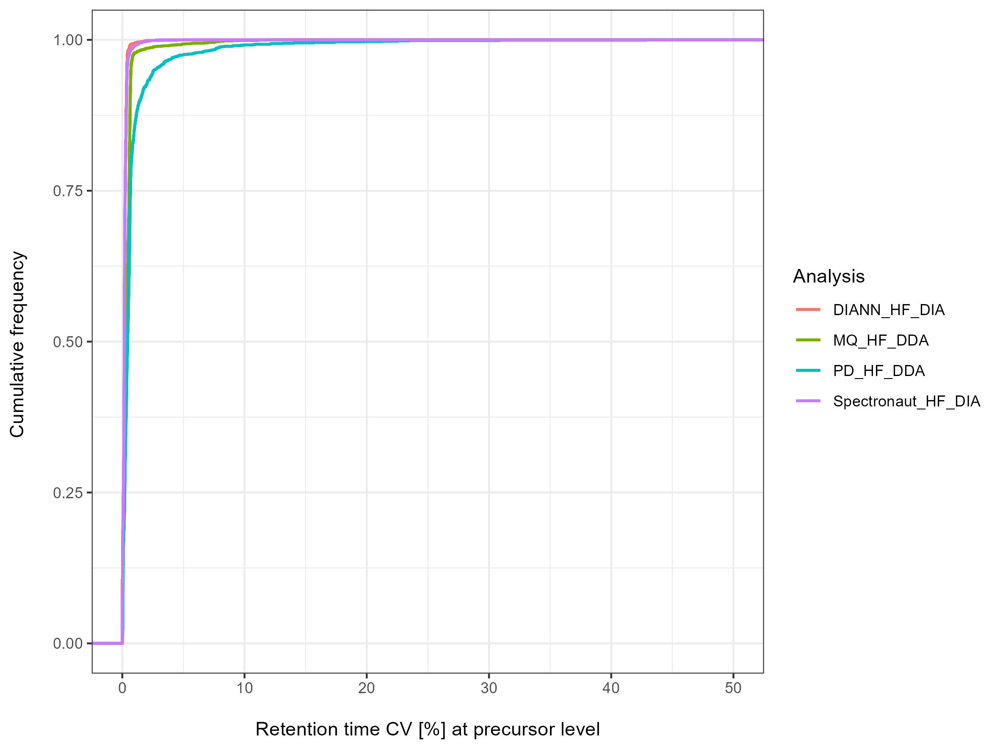

Use case - Software Comparison
usecase_Software.RmdData Analysis Report for software comparison.
Plasma samples were prepared and analyzed in triplicate MS runs on an Q Exactive HF instrument both in DDA and DIA mode. This vignette is a showcase example for comparing proteomic software. The DDA data was analyzed in MaxQuant (MQ) and ProteomeDiscoverer (PD). The DIA data was analyzed in Spectronaut and in DIA-NN.
Identifications
The number of identification are determined on precursor, peptide, protein and proteingroup level for each individual LC-MS set-up.
Data Completeness
The data completeness is investigated on precursor, peptide, protein and proteingroup level for the respective LC-MS set-ups. For a relative perspective each obtained absolute number of identifications for a specific number of missing values is divided by the total number of identifications.
Missed Cleavages
Missed cleavages are highlighted for the respective LC-MS set-ups. For a relative perspective each obtained absolute number of identifications for a specific number of missed cleavages is divided by the total number of identifications.
Retention time precision
The coefficient of variation (CV) of the retention time on precursor level is compared for each LC-MS set-up. Only identifications are included, which are present in every technical replicate per set-up.
Quantitative precision
The coefficient of variation (CV) of the LFQ intensities is compared for each LC-MS set-up on peptide and proteingroup level, respectively. Only identifications are included, which are present in every technical replicate per set-up.
Relationships Between Sets
The relationships between the data sets in terms of their overlapping identifications and other intersections are visualized via UpSet plots on precursor, peptide, protein and proteingroup level, respectively. For each set-up only identifications with full profiles are submitted.
Summary
All metrics are summarized via radar charts. As showcase examples radar charts for number of IDs, data completeness and precision metrics are shown. Note, that the radar charts are usually interactive. Due to size requirements for generating this pkgdown vignette, only pictures of the radar charts are included.